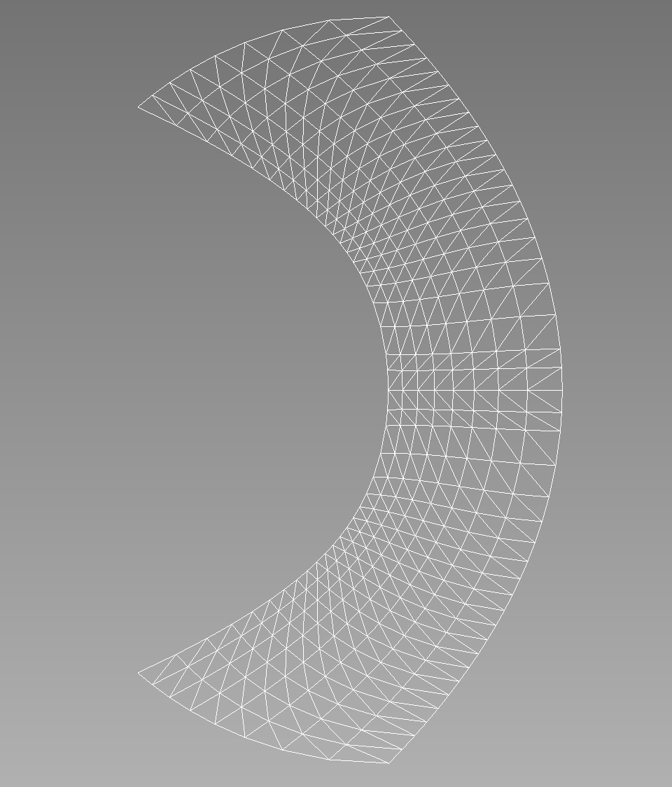

- gammaGamma parameter
C++ Type:Real
Unit:(no unit assumed)
Controllable:No
Description:Gamma parameter
- kmaxValue of k on the inner wall.
C++ Type:Real
Unit:(no unit assumed)
Controllable:No
Description:Value of k on the inner wall.
- kminValue of k on the outer wall.
C++ Type:Real
Unit:(no unit assumed)
Controllable:No
Description:Value of k on the outer wall.
- n_extra_q_ptsHow many 'extra' points should be inserted in the final element *in addition to* the equispaced q points.
C++ Type:int
Controllable:No
Description:How many 'extra' points should be inserted in the final element *in addition to* the equispaced q points.
- num_k_ptsHow many points in the range k=(kmin, kmax).
C++ Type:int
Controllable:No
Description:How many points in the range k=(kmin, kmax).
- num_q_ptsHow many points to discretize the range q = (0.5, k) into.
C++ Type:int
Controllable:No
Description:How many points to discretize the range q = (0.5, k) into.
RinglebMesh
Overview
This mesh can be applied to a Ringleb problem. This problem tests the spatial accuracy of high-order methods. The flow is transonic and smooth. The geometry is also smooth, and high-order curved boundary representation appears to be critical.
Governing Equations
The governing equations are the 2D Euler equations with .
Geometry
Let be a streamline parameter, i.e., on each streamline. The two stream lines for the two wall boundaries are for the inner wall, and for the outer wall. Let be the velocity magnitude. For each fixed , , the variable varies between and . For each , define the speed of sound , density , pressure , and a quantity denoted by by:
For each pair , set:
Mesh Overlook
For example, let's consider the following input file:
[Mesh]
type = RinglebMesh
kmin = 0.7
num_k_pts = 9
num_q_pts = 20
kmax = 1.2
n_extra_q_pts = 2
gamma = 1.4
triangles = true
[]
The corresponding mesh looks like this:

Further RinglebMesh Documentation
Input Parameters
- allow_renumberingTrueIf allow_renumbering=false, node and element numbers are kept fixed until deletion
Default:True
C++ Type:bool
Controllable:No
Description:If allow_renumbering=false, node and element numbers are kept fixed until deletion
- ghosting_patch_sizeThe number of nearest neighbors considered for ghosting purposes when 'iteration' patch update strategy is used. Default is 5 * patch_size.
C++ Type:unsigned int
Controllable:No
Description:The number of nearest neighbors considered for ghosting purposes when 'iteration' patch update strategy is used. Default is 5 * patch_size.
- inflow_bid1The boundary id to use for the inflow
Default:1
C++ Type:short
Controllable:No
Description:The boundary id to use for the inflow
- inner_wall_bid2The boundary id to use for the inner wall
Default:2
C++ Type:short
Controllable:No
Description:The boundary id to use for the inner wall
- outer_wall_bid4The boundary id to use for the outer wall
Default:4
C++ Type:short
Controllable:No
Description:The boundary id to use for the outer wall
- outflow_bid3The boundary id to use for the outflow
Default:3
C++ Type:short
Controllable:No
Description:The boundary id to use for the outflow
- parallel_typeDEFAULTDEFAULT: Use libMesh::ReplicatedMesh unless --distributed-mesh is specified on the command line REPLICATED: Always use libMesh::ReplicatedMesh DISTRIBUTED: Always use libMesh::DistributedMesh
Default:DEFAULT
C++ Type:MooseEnum
Controllable:No
Description:DEFAULT: Use libMesh::ReplicatedMesh unless --distributed-mesh is specified on the command line REPLICATED: Always use libMesh::ReplicatedMesh DISTRIBUTED: Always use libMesh::DistributedMesh
- skip_refine_when_use_splitTrueTrue to skip uniform refinements when using a pre-split mesh.
Default:True
C++ Type:bool
Controllable:No
Description:True to skip uniform refinements when using a pre-split mesh.
- trianglesFalseIf true, all the quadrilateral elements will be split into triangles
Default:False
C++ Type:bool
Controllable:No
Description:If true, all the quadrilateral elements will be split into triangles
Optional Parameters
- add_nodeset_idsThe listed nodeset ids will be assumed valid for the mesh. This permits setting up boundary restrictions for node initially containing no sides. Names for this nodesets may be provided using add_nodeset_names. In this case this list and add_nodeset_names must contain the same number of items.
C++ Type:std::vector<short>
Controllable:No
Description:The listed nodeset ids will be assumed valid for the mesh. This permits setting up boundary restrictions for node initially containing no sides. Names for this nodesets may be provided using add_nodeset_names. In this case this list and add_nodeset_names must contain the same number of items.
- add_nodeset_namesThe listed nodeset names will be assumed valid for the mesh. This permits setting up boundary restrictions for nodesets initially containing no sides. Ids for this nodesets may be provided using add_nodesets_ids. In this case this list and add_nodesets_ids must contain the same number of items.
C++ Type:std::vector<BoundaryName>
Controllable:No
Description:The listed nodeset names will be assumed valid for the mesh. This permits setting up boundary restrictions for nodesets initially containing no sides. Ids for this nodesets may be provided using add_nodesets_ids. In this case this list and add_nodesets_ids must contain the same number of items.
- add_sideset_idsThe listed sideset ids will be assumed valid for the mesh. This permits setting up boundary restrictions for sidesets initially containing no sides. Names for this sidesets may be provided using add_sideset_names. In this case this list and add_sideset_names must contain the same number of items.
C++ Type:std::vector<short>
Controllable:No
Description:The listed sideset ids will be assumed valid for the mesh. This permits setting up boundary restrictions for sidesets initially containing no sides. Names for this sidesets may be provided using add_sideset_names. In this case this list and add_sideset_names must contain the same number of items.
- add_sideset_namesThe listed sideset names will be assumed valid for the mesh. This permits setting up boundary restrictions for sidesets initially containing no sides. Ids for this sidesets may be provided using add_sideset_ids. In this case this list and add_sideset_ids must contain the same number of items.
C++ Type:std::vector<BoundaryName>
Controllable:No
Description:The listed sideset names will be assumed valid for the mesh. This permits setting up boundary restrictions for sidesets initially containing no sides. Ids for this sidesets may be provided using add_sideset_ids. In this case this list and add_sideset_ids must contain the same number of items.
- add_subdomain_idsThe listed subdomain ids will be assumed valid for the mesh. This permits setting up subdomain restrictions for subdomains initially containing no elements, which can occur, for example, in additive manufacturing simulations which dynamically add and remove elements. Names for this subdomains may be provided using add_subdomain_names. In this case this list and add_subdomain_names must contain the same number of items.
C++ Type:std::vector<unsigned short>
Controllable:No
Description:The listed subdomain ids will be assumed valid for the mesh. This permits setting up subdomain restrictions for subdomains initially containing no elements, which can occur, for example, in additive manufacturing simulations which dynamically add and remove elements. Names for this subdomains may be provided using add_subdomain_names. In this case this list and add_subdomain_names must contain the same number of items.
- add_subdomain_namesThe listed subdomain names will be assumed valid for the mesh. This permits setting up subdomain restrictions for subdomains initially containing no elements, which can occur, for example, in additive manufacturing simulations which dynamically add and remove elements. IDs for this subdomains may be provided using add_subdomain_ids. Otherwise IDs are automatically assigned. In case add_subdomain_ids is set too, both lists must contain the same number of items.
C++ Type:std::vector<SubdomainName>
Controllable:No
Description:The listed subdomain names will be assumed valid for the mesh. This permits setting up subdomain restrictions for subdomains initially containing no elements, which can occur, for example, in additive manufacturing simulations which dynamically add and remove elements. IDs for this subdomains may be provided using add_subdomain_ids. Otherwise IDs are automatically assigned. In case add_subdomain_ids is set too, both lists must contain the same number of items.
Pre-Declaration Of Future Mesh Sub-Entities Parameters
- alpha_rotationThe number of degrees that the domain should be alpha-rotated using the Euler angle ZXZ convention from https://en.wikipedia.org/wiki/Euler_angles#Rotation_matrix in order to align with a canonical physical space of your choosing.
C++ Type:Real
Unit:(no unit assumed)
Range:-180
Controllable:No
Description:The number of degrees that the domain should be alpha-rotated using the Euler angle ZXZ convention from https://en.wikipedia.org/wiki/Euler_angles#Rotation_matrix in order to align with a canonical physical space of your choosing.
- beta_rotationThe number of degrees that the domain should be beta-rotated using the Euler angle ZXZ convention from https://en.wikipedia.org/wiki/Euler_angles#Rotation_matrix in order to align with a canonical physical space of your choosing.
C++ Type:Real
Unit:(no unit assumed)
Range:-180
Controllable:No
Description:The number of degrees that the domain should be beta-rotated using the Euler angle ZXZ convention from https://en.wikipedia.org/wiki/Euler_angles#Rotation_matrix in order to align with a canonical physical space of your choosing.
- gamma_rotationThe number of degrees that the domain should be gamma-rotated using the Euler angle ZXZ convention from https://en.wikipedia.org/wiki/Euler_angles#Rotation_matrix in order to align with a canonical physical space of your choosing.
C++ Type:Real
Unit:(no unit assumed)
Range:-180
Controllable:No
Description:The number of degrees that the domain should be gamma-rotated using the Euler angle ZXZ convention from https://en.wikipedia.org/wiki/Euler_angles#Rotation_matrix in order to align with a canonical physical space of your choosing.
- length_unitHow much distance one mesh length unit represents, e.g. 1 cm, 1 nm, 1 ft, 5inches
C++ Type:std::string
Controllable:No
Description:How much distance one mesh length unit represents, e.g. 1 cm, 1 nm, 1 ft, 5inches
- up_directionSpecify what axis corresponds to the up direction in physical space (the opposite of the gravity vector if you will). If this parameter is provided, we will perform a single 90 degree rotation of the domain--if the provided axis is 'x' or 'z', we will not rotate if the axis is 'y'--such that a point which was on the provided axis will now lie on the y-axis, e.g. the y-axis is our canonical up direction. If you want finer grained control than this, please use the 'alpha_rotation', 'beta_rotation', and 'gamma_rotation' parameters.
C++ Type:MooseEnum
Controllable:No
Description:Specify what axis corresponds to the up direction in physical space (the opposite of the gravity vector if you will). If this parameter is provided, we will perform a single 90 degree rotation of the domain--if the provided axis is 'x' or 'z', we will not rotate if the axis is 'y'--such that a point which was on the provided axis will now lie on the y-axis, e.g. the y-axis is our canonical up direction. If you want finer grained control than this, please use the 'alpha_rotation', 'beta_rotation', and 'gamma_rotation' parameters.
Transformations Relative To Parent Application Frame Of Reference Parameters
- coord_blockBlock IDs for the coordinate systems. If this parameter is specified, then it must encompass all the subdomains on the mesh.
C++ Type:std::vector<SubdomainName>
Controllable:No
Description:Block IDs for the coordinate systems. If this parameter is specified, then it must encompass all the subdomains on the mesh.
- coord_typeXYZType of the coordinate system per block param
Default:XYZ
C++ Type:MultiMooseEnum
Controllable:No
Description:Type of the coordinate system per block param
- rz_coord_axisYThe rotation axis (X | Y) for axisymmetric coordinates
Default:Y
C++ Type:MooseEnum
Controllable:No
Description:The rotation axis (X | Y) for axisymmetric coordinates
- rz_coord_blocksBlocks using general axisymmetric coordinate systems
C++ Type:std::vector<SubdomainName>
Controllable:No
Description:Blocks using general axisymmetric coordinate systems
- rz_coord_directionsAxis directions for each block in 'rz_coord_blocks'
C++ Type:std::vector<libMesh::VectorValue<Real>>
Unit:(no unit assumed)
Controllable:No
Description:Axis directions for each block in 'rz_coord_blocks'
- rz_coord_originsAxis origin points for each block in 'rz_coord_blocks'
C++ Type:std::vector<libMesh::Point>
Controllable:No
Description:Axis origin points for each block in 'rz_coord_blocks'
Coordinate System Parameters
- build_all_side_lowerd_meshFalseTrue to build the lower-dimensional mesh for all sides.
Default:False
C++ Type:bool
Controllable:No
Description:True to build the lower-dimensional mesh for all sides.
- construct_node_list_from_side_listTrueWhether or not to generate nodesets from the sidesets (currently often required).
Default:True
C++ Type:bool
Controllable:No
Description:Whether or not to generate nodesets from the sidesets (currently often required).
- displace_node_list_by_side_listTrueWhether to renumber existing nodesets with ids matching sidesets that lack names matching sidesets, when constructing nodesets from sidesets via the default 'construct_node_list_from_side_list' option, rather than to merge them with the sideset.
Default:True
C++ Type:bool
Controllable:No
Description:Whether to renumber existing nodesets with ids matching sidesets that lack names matching sidesets, when constructing nodesets from sidesets via the default 'construct_node_list_from_side_list' option, rather than to merge them with the sideset.
Automatic Definition Of Mesh Element Sides Entities Parameters
- centroid_partitioner_directionSpecifies the sort direction if using the centroid partitioner. Available options: x, y, z, radial
C++ Type:MooseEnum
Controllable:No
Description:Specifies the sort direction if using the centroid partitioner. Available options: x, y, z, radial
- partitionerdefaultSpecifies a mesh partitioner to use when splitting the mesh for a parallel computation.
Default:default
C++ Type:MooseEnum
Controllable:No
Description:Specifies a mesh partitioner to use when splitting the mesh for a parallel computation.
Partitioning Parameters
- control_tagsAdds user-defined labels for accessing object parameters via control logic.
C++ Type:std::vector<std::string>
Controllable:No
Description:Adds user-defined labels for accessing object parameters via control logic.
- enableTrueSet the enabled status of the MooseObject.
Default:True
C++ Type:bool
Controllable:No
Description:Set the enabled status of the MooseObject.
Advanced Parameters
- max_leaf_size10The maximum number of points in each leaf of the KDTree used in the nearest neighbor search. As the leaf size becomes larger,KDTree construction becomes faster but the nearest neighbor searchbecomes slower.
Default:10
C++ Type:unsigned int
Controllable:No
Description:The maximum number of points in each leaf of the KDTree used in the nearest neighbor search. As the leaf size becomes larger,KDTree construction becomes faster but the nearest neighbor searchbecomes slower.
- patch_size40The number of nodes to consider in the NearestNode neighborhood.
Default:40
C++ Type:unsigned int
Controllable:No
Description:The number of nodes to consider in the NearestNode neighborhood.
- patch_update_strategyneverHow often to update the geometric search 'patch'. The default is to never update it (which is the most efficient but could be a problem with lots of relative motion). 'always' will update the patch for all secondary nodes at the beginning of every timestep which might be time consuming. 'auto' will attempt to determine at the start of which timesteps the patch for all secondary nodes needs to be updated automatically.'iteration' updates the patch at every nonlinear iteration for a subset of secondary nodes for which penetration is not detected. If there can be substantial relative motion between the primary and secondary surfaces during the nonlinear iterations within a timestep, it is advisable to use 'iteration' option to ensure accurate contact detection.
Default:never
C++ Type:MooseEnum
Controllable:No
Description:How often to update the geometric search 'patch'. The default is to never update it (which is the most efficient but could be a problem with lots of relative motion). 'always' will update the patch for all secondary nodes at the beginning of every timestep which might be time consuming. 'auto' will attempt to determine at the start of which timesteps the patch for all secondary nodes needs to be updated automatically.'iteration' updates the patch at every nonlinear iteration for a subset of secondary nodes for which penetration is not detected. If there can be substantial relative motion between the primary and secondary surfaces during the nonlinear iterations within a timestep, it is advisable to use 'iteration' option to ensure accurate contact detection.